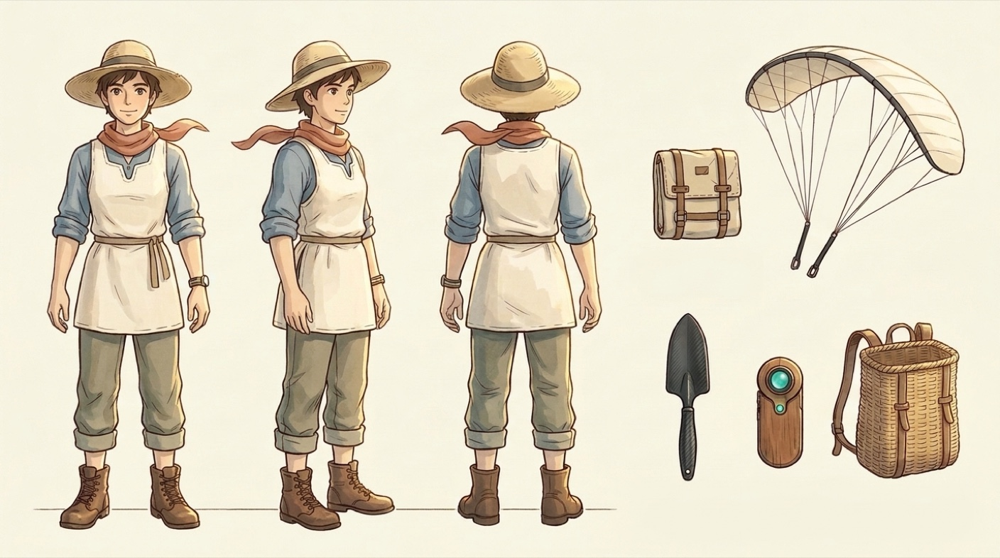
01 · 主角三视图与随身轻量化装备
人物基准 1.70 m亚麻工装罩衫叠穿青灰衬衣、陶土色围巾与藤编宽檐帽；左腕嵌青铜玻璃气象手环，右侧拆解展示滑翔伞、碳纤园艺铲、种子扫描仪与收获背篓。
承接《牧歌计划》第一卷 R = 1000 m × L = 6 km 奥尼尔圆筒总纲，本卷按统一「明快水粉原画 + 暖棕褐描线」美术口吻与近未来轻量化太空移民质感，系统定型人物、经纬度建筑与公共节点、牧场与生态动物、三气候带植物与作物周期，以及星海巨窗与 0G 枢纽等标志景观。
亚麻/帆布天然织物为主体，仅在关键交互位置点缀腕表遥测、碳纤农具与轻量滑翔翼

亚麻工装罩衫叠穿青灰衬衣、陶土色围巾与藤编宽檐帽；左腕嵌青铜玻璃气象手环，右侧拆解展示滑翔伞、碳纤园艺铲、种子扫描仪与收获背篓。
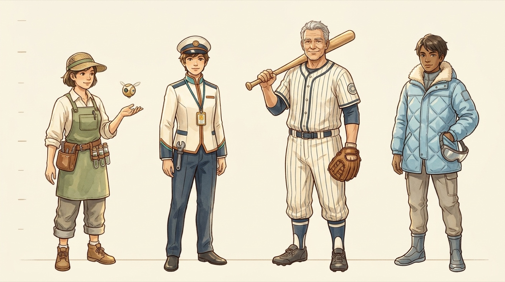
生态农艺师掌心悬停微型授粉蜂群无人机；电车司机佩磁力扳手；老宇航员教练携老式圆筒徽章球衣演示科氏力曲球；北端向导着磁吸靴与保暖防风衣。
| 角色原型 | 标准身高 (1:1) | 材质与科技点缀 | 所属社区位置 / 核心交互职责 |
|---|---|---|---|
| 主角 · 新晋农场拓荒者 | 1.70 m（眼高 1.58 m） | 未漂白亚麻罩衫、碳纤滑翔翼、腕带大气与重力遥测仪 | 个人 80×80 m 农场起步，自由步行至 20 m 绿道串门及全域飞行探索 |
| 林禾 · 植物生态农艺师 | 1.66 m | 鼠尾草绿帆布围裙、玻璃种子试管、黄铜授粉微无人机 | 驻守温室与绿道驿站，提供地球经纬度风貌种子配方与花期诊断 |
| 周澜 · 环谷轻轨电车长 | 1.73 m | 乳白深蓝拼接制服、黄铜工牌挂绳、紧凑磁力轨距扳手 | 驾驶 22.2 m 纯白三节电车往返「南湾—谷地—北雪岸」6 km 主干线 |
| 陈牧 · 退休宇航员棒球教练 | 1.84 m | 复古条纹球衣（轨道环肩章）、全牛皮捕手手套与白蜡木棒 | 中段社区棒球场导师，引导玩家理解 0.95 RPM 垂直抛球与侧偏轨迹 |
| 诺阿 · 北端 0G 枢纽向导 | 1.76 m | 天蓝轻量保温防风帕卡、可拆防眩目风镜、低磁阻吸附靴 | 驻守 5.8–6.0 km 北端盖斜坡缆车站，指导低重力滑翔与中央港起降 |
所有私人农场严格落入 80×80 m 地块与 20 m 四向门洞绿道红线，附带微缩行人标定门廊体量
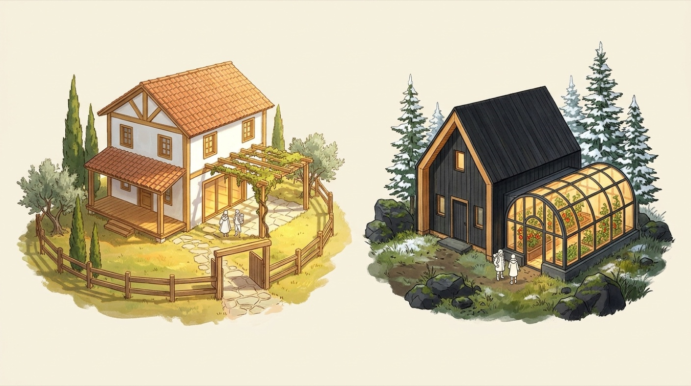
微缩旅人立于石板门廊前标尺 1:1 尺度；木栅栏留出宽阔 6 m 门洞无缝接入 20 m 社区绿道。
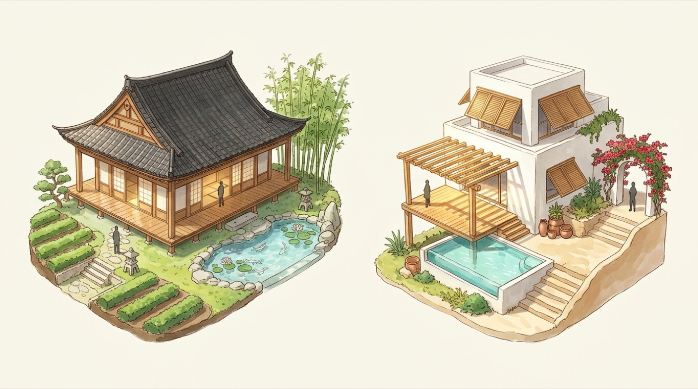
玩家输入东亚或低纬海岸经纬度时，同一结构基座可瞬间替换为深挑檐外廊或通风木百叶海景台地。
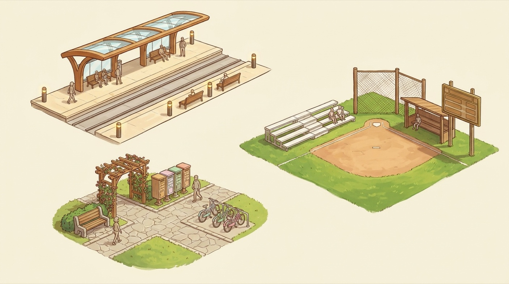
打通串门仪式感的关键节点：无需传送或读图，骑车或步行穿过玫瑰花架即到邻居家信箱门口。
| 建筑 / 公共模块 | 占地红线 (1:1) | 檐口 / 总高 | 核心材质与生态联动 |
|---|---|---|---|
| 温带双层田园农舍 | 13.5 × 9.6 m（配藤架露台） | 檐高 6.2 m / 脊高 9.4 m | 石灰白灰泥 + 蜂蜜色雪松梁 + 红陶筒瓦；南向推拉落地窗采纳漫射天光 |
| 北欧地热玻璃农舍 | 木屋 12 × 9 m + 温室 12 × 9.6 m | 尖顶 8.6 m / 拱棚 4.8 m | 炭化防腐冷杉外墙 + 双层弧形钢框玻璃大棚；内部四季恒温暖光补光 |
| 东亚茶居锦鲤庭院 | 主屋 14 × 10 m + 莲池 10 × 7 m | 单半层脊高 7.4 m | 深炭灰瓦顶、和纸推拉障子门、挑出石池的木质外廊与阶梯茶畦墙 |
| 南湾海崖白墙别墅 | 退台 15 × 13 m + 蓄水碧池 | 总高 8.2 m | 耐盐雾白墙 + 可调角度雪松百叶窗 + 三角梅花架石阶直通沙滩 |
| 轻轨林荫玻璃站台 | 长 26 m × 宽 4.2 m | 挑檐高 3.7 m | 石板抬高月台 + 弧形木肋晴天玻璃雨棚 + 双轨镶嵌道床 |
| 20 m 绿道邻里交汇站 | 节点广场 10 × 10 m | 花架高 3.2 m | 青石拼花路口、攀援月季木廊架、四色邻里木信箱群与单车停放架 |
畜牧动物沿用 3D Demo 实测肩高比例；野生动物负责维系授粉、控虫与水陆生境循环
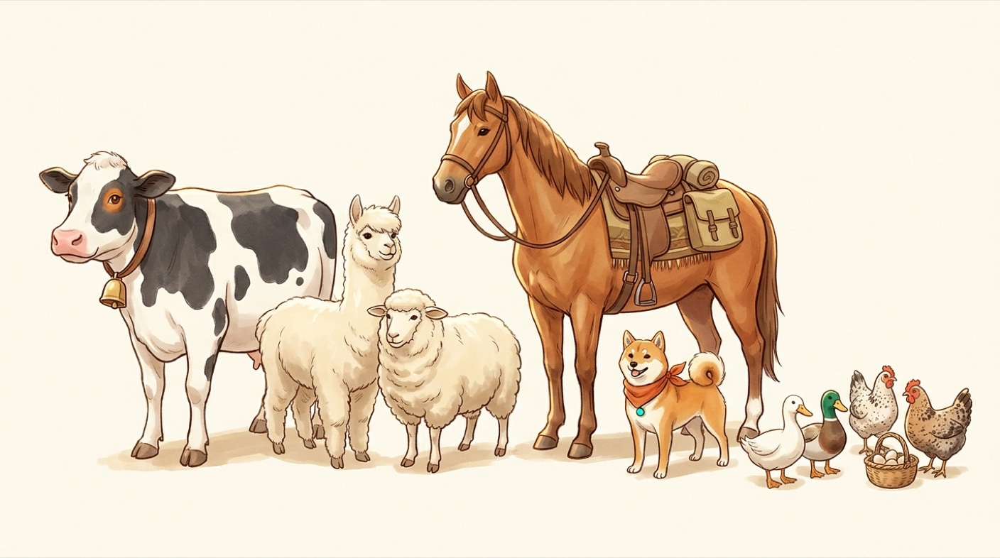
与线上 3D Demo 中段农场模型一一对应，覆盖产奶、剪绒、长距离骑乘串门、看家引路与庭院蛋禽生态。
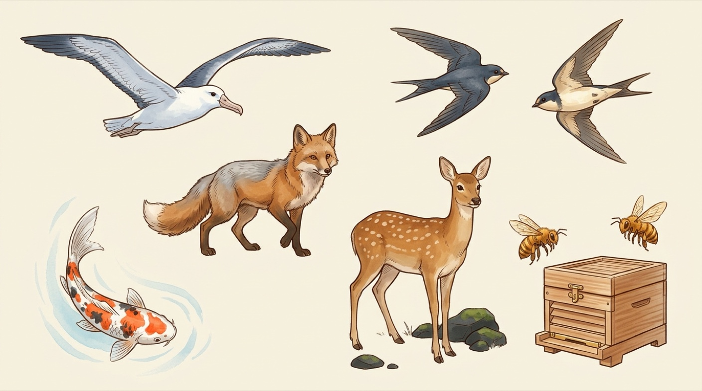
圆筒内部没有外部天敌迁徙路径，需要由白嘴信天翁、雨燕、授粉蜜蜂与溪流锦鲤构成稳定的生态调节网。
| 物种名称 | 真实体尺 (肩高/翼展) | 生境分区 | 生态与玩法交互 |
|---|---|---|---|
| 花斑奶牛 / 绵羊与羊驼 | 奶牛高 1.42 m · 羊驼 1.25 m | 中段牧场 / 北欧草甸 | 可梳毛、采集鲜乳与羊毛原料，在 80×80 m 围栏内缓步巡游 |
| 栗色牧场骑乘马 | 肩高 1.62 m（带帆布鞍囊） | 谷地大道与绿道全网 | 替代走路与短途货运，可挂载两个收获货箱跨区串门 |
| 牧歌田园柴犬 | 体高 0.68 m | 随行全境 | 佩发微光定位项圈牌，能协助嗅探松露、成熟作物或领路访友 |
| 环流信天翁与家燕 | 信天翁翼展 2.2 m · 雨燕 0.38 m | 筒内低空云带（离地 80–400 m） | 借圆筒自转微风盘旋，飞行中可追踪它们找到高空上升热气流 |
| 雪林赤狐与林间狍鹿 | 赤狐肩高 0.42 m · 狍鹿 0.78 m | 北段雪杉林带与中段溪畔 | 晨昏出没，控制林下啮齿与过度茂密嫩枝；不主动惊扰可静观留影 |
| 溪池锦鲤与雪松蜂群 | 锦鲤长 0.55 m · 蜂箱 0.65×0.55 m | 东亚水院、灌溉溪与所有花田 | 蜜蜂是果树、薰衣草与温室番茄自然授粉的核心产出倍增器 |
利用 6 km 轴向温度梯度在同一直径内自然分层：热带椰林 → 温带百果 → 高纬雪杉与温室番茄
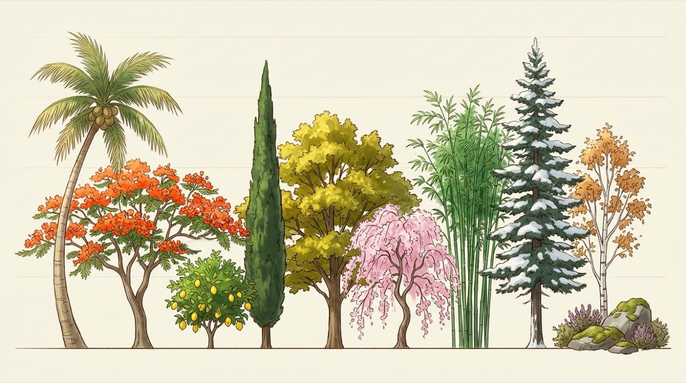
同一张标高参考线直观校对树冠尺度：细长托斯卡纳丝柏形成纵轴天际节奏，大冠幅大道枫树负责街景遮阴。
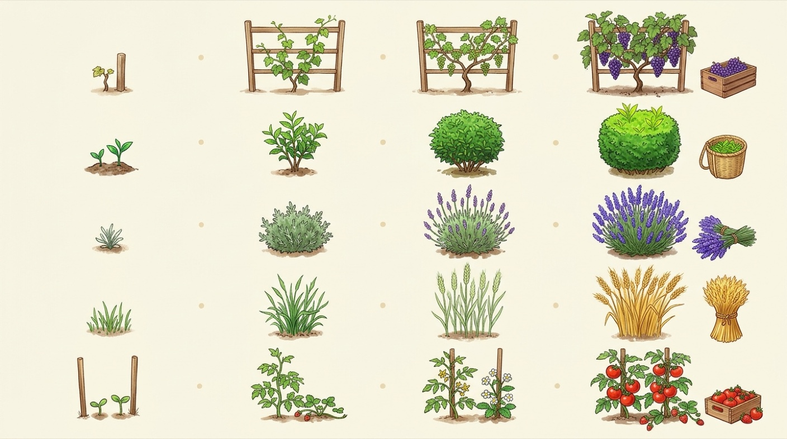
直接对应各经纬度农场的经济产出物：葡萄箱、采茶竹篓、干花扎束、小麦捆与温室红番茄草莓木盒。
| 气候带 / 植物组 | 典型品种与高度 (1:1) | 收获物 / 视觉特征 | 土壤与浇灌偏好 |
|---|---|---|---|
| 南段亚热带乔木 (0–1.8 km) | 椰子树 15 m · 凤凰木 10 m · 柠檬树 4.2 m | 鲜椰、橙红花冠剪影、黄柠檬鲜果 | 高日照与海风湿度，耐沙质海崖排水坡土 |
| 中段温带与东亚木 (1.8–4.4 km) | 丝柏 14 m · 大道栎/枫 11 m · 垂樱 6.5 m · 竹林 13 m | 纵向地标剪影、夏季林荫道与春季落樱花雨 | 肥沃壤土与灌溉暗渠微湿养护 |
| 北段寒带与苔原 (4.4–5.8 km) | 积雪挪威云杉 15 m · 银白桦 10 m · 石楠玄武岩 1.2 m | 冬季挂雪层积特效、秋日金叶与苔藓岩块地被 | 耐寒砾质火山岩土，无需人工加温 |
| 葡萄 / 茶 / 薰衣草 / 金麦 | 棚架高 2.0 m · 茶丛 1.1 m · 小麦 1.2 m | 4 阶段可视化抽穗、开花变色与打包果篮成品 | 随经纬度农场风格自动匹配种子轮作包 |
| 地热温室吊蔓番茄与草莓 | 棚内立架高 1.9 m · 悬垂草莓蔓 0.45 m | 零下雪岸也可常年收获亮红串番茄与高山甜草莓 | 高纬 |Lat| ≥ 57° 农场专属封闭滴灌补光床 |
把科幻大尺度留给头顶与窗外——平视脚下是安静精致的木石与白电车，抬头是星海、巨行星与 0G 枢纽
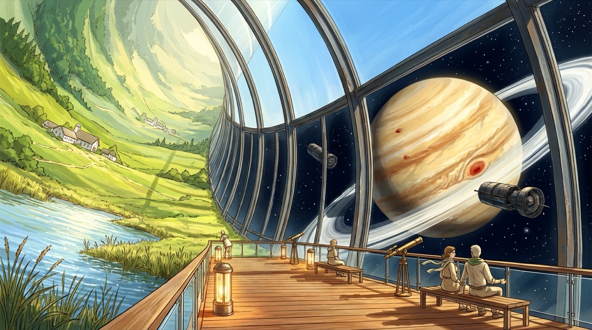
装备黄铜望远镜、暖光玻灯柱与湖岸芦苇长椅，在 1G 平地体感下直视深空天体。
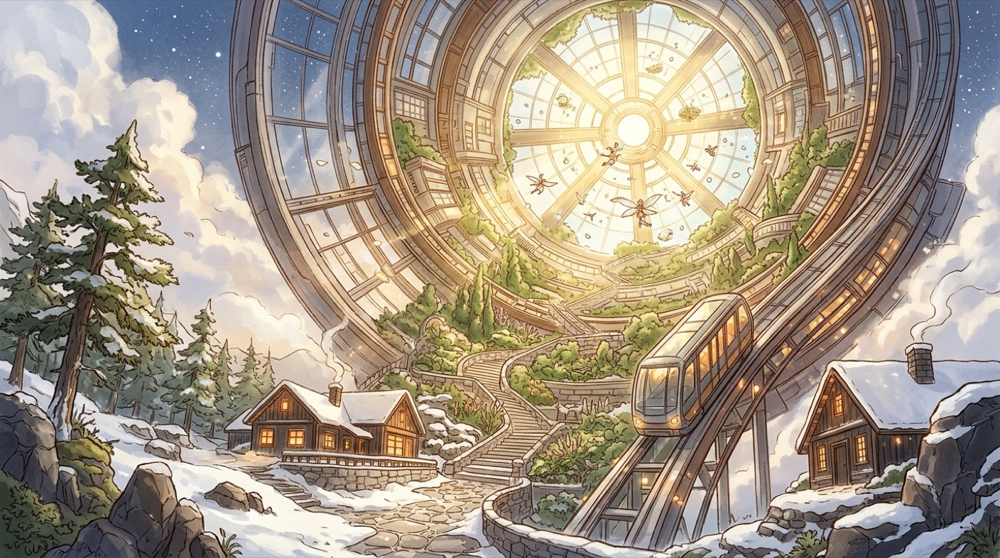
全圆筒唯一能真实体验到「上坡」与「体重变轻直至失重漂浮」的标志性竖向景观奇观。
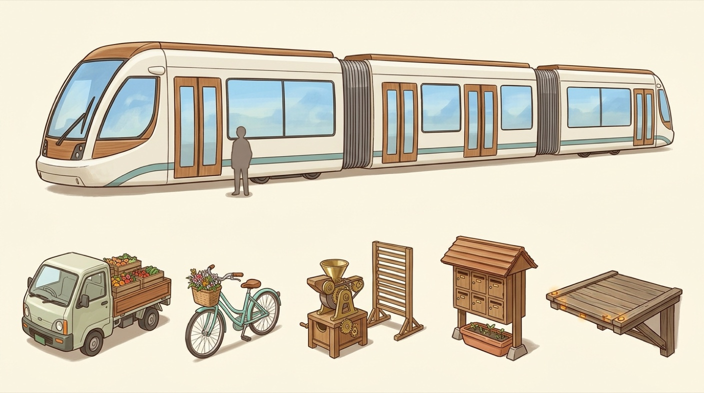
既满足 6 km 轴向通勤与 20 m 绿道悠闲骑行，也承担旋转物理学演示与悬崖起飞功能。
| 地标 / 载具 / 道具 | 标准规格 (1:1) | 材质与运行机制 | 游戏内体验锚点 |
|---|---|---|---|
| 42° 观测巨窗与栈道 | 窗扇张角 42°（跨弧长 733 m） | 阳极氧化暗钢弧肋 + 双层高透星海玻璃 + 雪松栈道 | 无论站着、坐长椅或架望远镜，皆可直视气态巨行星大气环与姊妹船队 |
| 北端盖 0G 阶梯与缆车 | 高程跨度 1000 m（斜长径 200 m） | 对角玻璃登山缆车 + 分段式植物花坛台阶 + 轴心圆环大厅 | 沿壁爬升过程重力从 1.0 G 平滑降至 0 G，枢纽区开启无束缚滑翔悬浮 |
| 纯白三节轻轨电车 | 总长 22.2 m × 宽 2.55 m × 高 3.1 m | 哑光奶白车身、雪松门框、青蓝细腰线、静音直线感应驱动 | 贴合地面双轨贯穿全谷地，可在任一站台免费登车饱览头顶倒悬村落 |
| 电动小型农用货车 / 单车 | 小货车 3.6×1.55 m · 单车轮径 0.68 m | 鼠尾草白货斗配木框箱；薄荷蓝弯梁车架配藤编野花篮 | 绿道内轻载运输农产品或慢速拜访百米外邻居农舍 |
| 机械科氏力抛球校准机 | 机身高 1.35 m · 竖栅标尺高 2.8 m | 黄铜齿轮抛射漏斗 + 木质竖向参考标靶框 | 在社区棒球场以固定初速 18 m/s 垂直上抛，肉眼对比理想垂直与顺转弯曲轨迹 |
| 崖边滑翔翼跳台 | 木挑台宽 3.8 m × 伸出 4.4 m | 重型防腐雪松斜撑木台 + 琥珀色边缘风向指示微光灯 | 部署于高坡草甸与北端梯田缘，提供极佳起跳视野接续主角滑翔翼 |
第一卷记录了奥尼尔圆筒的半径、转速与三气候带世界观双风格概念画；3D Demo 已将本卷中段主角、轻轨、经纬度农场、动物、植物、棒球场与 42° 巨窗真实跑通。